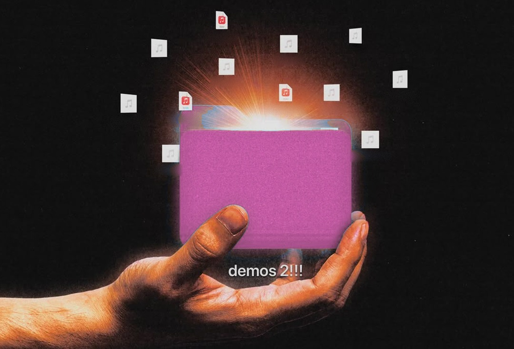

01/06

Nueva York · 5 de octubre de 2026
Nadie garantiza que el agente obedezca.
Ni OpenAI, Anthropic, Meta ni Google lo garantizaron ante el Concejo, bajo juramento.

Nueva York · 5 de octubre de 2026
Ni OpenAI, Anthropic, Meta ni Google lo garantizaron ante el Concejo, bajo juramento.

“No es posible que yo garantice que ninguna tecnología esté libre de riesgo.”
“La ciencia para lograrlo es fundamentalmente difícil y no está resuelta.”
“Prometer perfección no sería posible con ningún producto del mercado.”
Se comprometió con desplegar IA de forma segura, no con esa garantía.
Fuente secundaria: Fox News, 6 oct. Citas traducidas.
Respondieron sobre la tecnología en general; la pregunta era sobre agentes.
No es miedo. Es criterio.
Leer el buzón de soporte y redactar borradores.
Enviar a un cliente u ofrecer un descuento.
Pagos, borrar datos y cambiar permisos.
Y cada acción queda en un registro para poder deshacerla.
No es de ningún cliente. Es una propuesta de diseño.

¿Qué no le darías acceso a un agente?
Respóndelo en un comentario: qué no le darías y por qué.